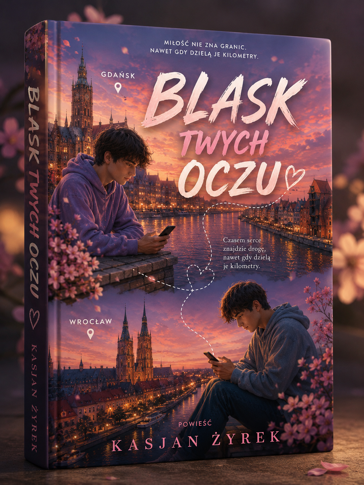

„Blask twych oczu” to historia Kamila, który po trudnym rozstaniu zmaga się z kryzysem psychicznym, ale dzięki poznaniu Bartosza stopniowo odzyskuje nadzieję, pewność siebie i wiarę w przyszłość. To opowieść o miłości, dojrzewaniu, zdrowieniu i walce o własne marzenia.
„Blask twych oczu” opowiada o Kamilu, który po rozstaniu przechodzi przez trudny kryzys i musi zmierzyć się z własnymi lękami oraz poczuciem beznadziei. Ważną częścią historii jest jego relacja z Bartoszem, która z czasem przeradza się w miłość. Kamil nadal musi jednak pracować nad sobą i uczyć się przyjmować pomoc. To historia o dojrzewaniu, zdrowieniu, odzyskiwaniu wiary w siebie oraz budowaniu własnej przyszłości.
✔ dla osób, które lubią historie o miłości i dojrzewaniu
✔ dla czytelników zainteresowanych tematyką zdrowienia i pokonywania kryzysów
✔ dla osób, które cenią realistyczne emocje i relacje między bohaterami
✔ dla czytelników, którzy lubią historie o drugiej szansie i nadziei
✔ dla osób, które lubią bohaterów przechodzących wyraźną przemianę
✔ dla każdego, kto chce przeczytać historię o miłości, wsparciu i walce o przyszłość
Niektóre historie zaczynają się od momentu, w którym wszystko wydaje się stracone. „Blask twych oczu” pokazuje drogę Kamila od kryzysu i poczucia beznadziei do odzyskania nadziei, miłości i własnych planów na przyszłość.
Pozwól sobie zatrzymać na chwilę, odłożyć codzienność i wejść do świata przedstawionego w powieści. Poznaj Kamila, jego lęki, marzenia i trudną drogę do odzyskania równowagi. Towarzysz mu w relacji z Bartoszem, która staje się ważną częścią jego nowego życia.
Historia Kamila o kryzysie, miłości, zdrowieniu i odzyskiwaniu wiary w przyszłość.